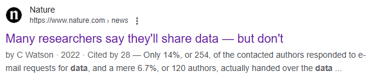
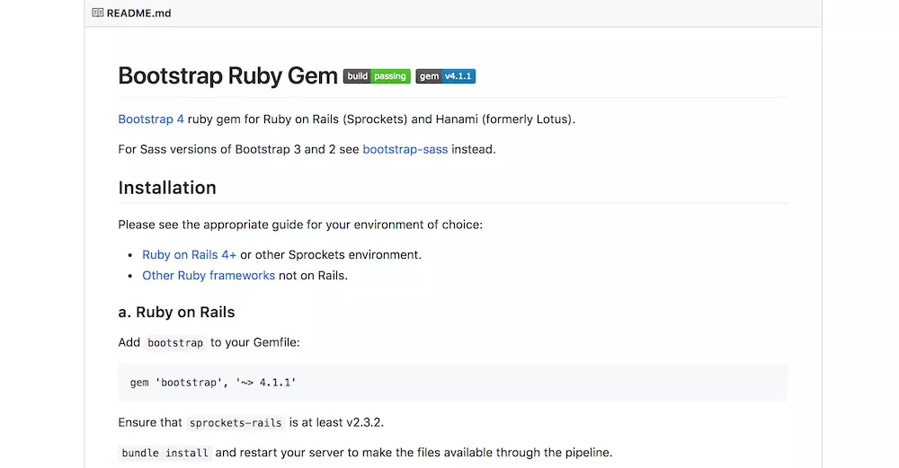
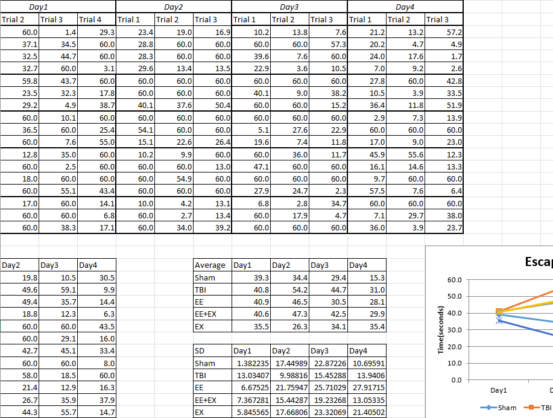
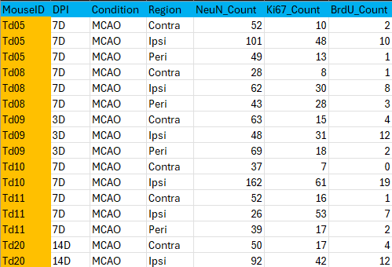
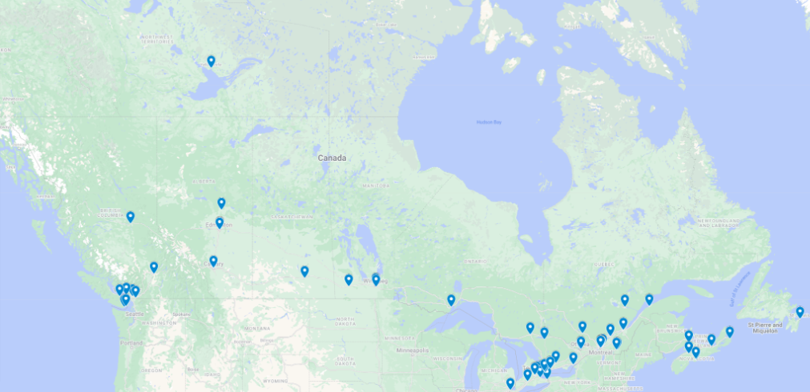

flowchart LR A[Efficiency] --> B[Ease of re-sharing] B --> C[Collaboration] C --> D[Reproducibility]
Sharing and depositing research data
A guide for researchers
Why do we care about sharing data?
Agenda
Why do we care about sharing data?
Current issues with data
Principles of sharing data
General guidelines for dataset deposits
Data submission checklist
Canadian generalist repositories
Why do we share and reuse data?
Some reasons to share research data:
Avoid unnecessary or costly experiments by using previous research results.
Validate findings: Independent verification of research results.
Repurpose data for new research questions, in combination with other datasets or as an educational resource.
Build on previous work to accelerate scientific discovery and meta-analysis based on raw data and reproducible research.
Tri-Agency Research Data Management Policy
The Goverment of Canada promotes RDM in its Tri-Agency Research Data Management Policy.
Through its federal funding agencies, the Government of Canada seeks to implement data management plans (DMPs) and sharing of research data to maximize the benefits to society.
Sharing data are a professional responsibility
Data sharing is NOT ONLY to meet the requirements of funding agencies and journals. It is an ethical and professional responsibility of researchers to ensure access and reuse of data in the context of open reproducible science.
Research needs to move towards
- Competent researchers in RDM and data analysis.
- Standardized approaches to sharing raw data and analysis code to support research findings.
- Researchers with a commitment to transparency and best scientific practice practices to ensure research integrity.
Benefits for different stakeholders
For researchers:
For publishers:
flowchart LR A[Rigorosity] --> B[Validation] B --> C[Open science]
For funders:
flowchart LR A["Transparency"] --> B["Accountability"] B--> C["Return on investment"]
Current issues with data
Agenda
Why do we care about sharing data?
Current issues with data
Principles of sharing data
General guidelines for dataset deposits
Data submission checklist
Canadian generalist repositories
Data could be in many places
In most research environments, data are stored across a wide range of locations, and often, in an uncoordinated way.

Data are not shared
Although many research articles claim that data are “available upon request,” the reality often tells a different story.
Data availability statement
“The raw data supporting the conclusions of this article will be made available by the authors, without undue reservation.”

Common issues in data repositories
When we shared data typically:
Lacks comprehensive metadata and README file(s) explaining the context, methodology, and structure of the dataset.
Unstructured and lacks naming conventions, making it impossible to reuse it.
Are considered supplement to research articles.
Principles of sharing data
Agenda
Why do we care about sharing data?
Current issues with data
Principles of sharing data
General guidelines for dataset deposits
Data submission checklist
Canadian generalist repositories
Ensure that data is a comprehensible, independent resource
This means that the dataset should be:
Well documented: Others should be able to understand the dataset without needing access to the original researchers or article.
Organized: File structures, naming conventions, and folder hierarchies should be logical and easy to follow.
Discoverable: The dataset should be accesible and reusable by the community.
FAIR principles
In general, datasets must follow the FAIR principles:
Findable
- Persistent identifiers
- Rich metadata
- Indexed in a searchable resource
Accessible
- Open file formats
- Software requirements
Interoperable
- Formal, standardized, common language
- Reference to other (meta)data
Reusable
- Appropriate context and detailed provenance
- Accurate/descriptive attributes
- Clear license and usage rights
General guidelines for dataset deposits
Agenda
Why do we care about sharing data?
Current issues with data
Principles of sharing data
General guidelines for dataset deposits
Data submission checklist
Canadian generalist repositories
General guidelines for data sharing
Provide a descriptive title, summary and keywords that reflect the content of the dataset.
Include a READMEfile with metadata.
Define a dataset structure and consistent naming conventions.
1. Provide a descriptive title, summary and keywords
Dataset title
Make sure that the title reflects the nature and content of the dataset.
Example 1
Original title: PiPaw2.0
Improved title: Home cage based motor learning platform PiPaw2.0
Example 2
Original title: Foliar Functional Trait Mapping
Improved title: Foliar Functional Trait Mapping of a mixed temperate forest using imaging spectroscopy
Example 3
Original title: Covariation in Width and Depth in Bedrock Rivers Data Archive
Improved title: Data archive for width and depth covariation within the bedrock Fraser Canyon, British Columbia, Canada
Caution
The title of the dataset IS NOT the same as the title of the associated research article.
Dataset description
The description of the dataset shall contain sufficient elements to understand its nature, origin and content.
Example 1
Original description: This dataset provides climate data (19 bioclimate variables as defined by worldclim) that were generated using the Biosim 11 software at a spatial resolution of 9 km across Canada between 1980-2020.
Improved description: This dataset provides climate data (19 bioclimate variables as defined by worldclim) that were generated using the Biosim 11 software at a spatial resolution of 9 km across Canada between 1980-2020. Please refer to https://www.worldclim.org/data/bioclim.html for information about the variables. The dataset contains: the annual mean temperature, mean diurnal range, isothermality, temperature seasonality, maximum temperature of warmest month, minimum temperature of coldest month, temperature annual range, mean temperature of wettest quarter, mean temperature of driest quarter, mean temperature of warmest quarter, mean temperature of coldest quarter, annual precipitation, precipitation of wettest month, precipitation of driest month, precipitation seasonality (coefficient of variation), precipitation of wettest quarter, precipitation of driest quarter, precipitation of warmest quarter, precipitation of coldest quarter.
Example 2
Original description: Exposure to neuromodulatory chemicals in the polychaete marine worm, Capitella teleta, has been used to assess changes in locomotory behavior in adult and juvenile life stages.Worms were exposed to nicotine, fluoxetine, apomorphine, and phenobarbital and had their distance moved, maximum velocity, time to/at the edge of the arena, and time to first move measured.
Improved description: The presence of compounds such as pharmaceuticals and pesticides act as neurochemicals in aquatic organisms. This repository contains the raw data from a study investigating the effects of neuromodulatory chemicals in the marine polychaete worm Capitella teleta. We investigated the effects of nicotine, fluoxetine, apomorphine and phenobarbital, which are known to interact with acetylcholine, serotonin, dopamine and GABA pathways. We measured locomotory behavior using a high throughput multi-well plate assay, using parameters such as total distance moved, time spent moving, time spent at the edge and maximum velocity. We also performed RNA extraction and sequencing with juvenile and adult worms to determine if genes in the pathway were expressed. We share gene sequences, alignments, motif searching, and phylogenetic analysis files for each receptor (with acetylcholine, serotonin, dopamine and GABA) and videos, together with raw .fasta files for RNA sequencing and R code for processing/analysis.
Tip
Use numerous keywords to increase the discoverability of the dataset.
Keywords
To find relevant keywords, ask yourself the following question:
What terms can a reuser use in a search box to find my data?
2. The guiding light of a dataset: the README file
The README file is a guide to understanding the dataset and enabling its reuse.

FRDR users can use our text or [web] templates to generate a README file for submission to FRDR.
Additional resources are:
- Creating a README file
- README.so
- README.ai
Contents of a README file
Typically, a README file includes:
Dataset identifiers, like title, authors, date of collection, and geographical information.
A folder tree, defining the hierarchy of folders and files.
A description of the naming conventions used for files and folders.
Methods for data collection/generation, analysis, and experimental conditions.
Caution
The dataset is an independent object. Methods and tools for data collection MUST NOT be relegated to the associated research article.
A set of instructions and software required to open and handle the files.
Sharing and access information, detailing permissions and terms of use.
3. Define a dataset structure
A structured dataset is the key to understanding and reusing it.
![A structured directory tree representing an organized research project folder. The top-level folders include 'Code,' containing R scripts for data cleaning and analysis 'clean_raw_data.r,' 'analysis_1.r,' 'analysis_2.r', 'Data,' which is divided into 'Raw_data' containing raw files 'file_a.raw' and 'file_b.raw' and 'Processed_data' containing cleaned CSV files 'file_a.csv' and 'file_b.csv, 'Outputs,' which includes subfolders for 'Figures' and 'Models', and a 'README.txt' file. This structure follows best practices for research data organization.](images/files.png)
Principles for structuring a dataset
Define a structure for the data at the beginning (best) or during the course of the research.
Think about
- Folder structure
- File types/formats
- Logical/descriptive naming conventions
Overall, ensure that the dataset structure is logical and consistent, understandable to external users.
Diving into the folder tree
TIER 4.0 is a project template to standardize datasets.
Download the project structure and adapt it to specific cases.
![A hierarchical directory structure following the TIER Protocol 4.0 for research data organization. The top-level 'Project/' folder contains key documents such as 'The Read Me File' and 'The Report.' The 'Data/' folder is divided into 'InputData/' (with 'Input Data Files' and 'Metadata' subfolders, including 'Data Sources Guide' and 'Codebooks'), 'AnalysisData/' (with 'Analysis Data Files' and 'The Data Appendix'), and 'IntermediateData/'. The 'Scripts/' folder includes subfolders for 'ProcessingScripts/', 'DataAppendixScripts/', 'AnalysisScripts/', and 'The Master Script.' The 'Output/' folder contains 'DataAppendixOutput' and 'Results.' This structure ensures transparency and reproducibility in research data management.](images/tier.png)
Datasets content
Shared data includes:
- Raw data
- Intermediate and analysis data
- Processing and analysis scripts
- Output/results
- README files and codebooks
Tip
Visit our resource on handling and organizing research data.
Beware of poorly formatted tables
Despite being the most common file type (.xls) for recording/storing data, tables are the most poorly organized and unusable objects in research.


Among the most problematic formatting issues are: merged cells that confuse parsing tools, inconsistent structures where multiple variables are crammed into a single column or row, and mixed content, such as tables combined with graphs or formatting.
Share tidy-formatted tables

Columns
- Identifier variables: animal ID, Time point, condition (factors or characters).
- Analysis variables: score, area, number of cells, etc (numerical or categorical).
- Variables created during processing (proportions, ratios, etc).
Rows
- Variable values: entries for each column (variable). Each row corresponds to a unique observation.
Scripting is the way
While most scientists may be more comfortable with GUIs, the current research landscape requires the use of scripts and code to ensure reproducible research results.
![A humorous Star Wars-themed meme comparing different programming languages. The image is divided into three sections, each showing a Star Wars character wielding a lightsaber. On the left, Luke Skywalker, with an 'R' programming language logo, holds a blue lightsaber. In the center, Kylo Ren wields a red crossguard lightsaber with the GraphPad logo. On the right, Mace Windu, associated with the Python logo, holds a purple lightsaber. This meme humorously depicts the perceived roles open sofeare has in the research landscape.](images/Theway.png)
Tip
Coding should be considered an essential skill like other research methods.
Keep in mind
Logical naming conventions are the key to linking the raw data, processing scripts, and analysis data.
Data submission checklist
Agenda
Why do we care about sharing data?
Current issues with data
Principles of sharing data
General guidelines for dataset deposits
Data submission checklist
Canadian generalist repositories
Submitting data to a repository
When sharing data, make sure the dataset meets these characteristics:
Folders and files are clearly structured.
Files and folders have consistent naming conventions.
Open file formats (e.g., CSV, TIFF) make it easy to open and reuse data.
The README file contains sufficient information to understand the nature, content, and origin of the data.
FAQ
When do I start organizing my data for sharing?
We recommend implementing RDM practices early and throughout the research process. Organizing data after years of chaotic data management is challenging.
When do I share my data?
Data can be shared at any time during the research process. There is no need to wait until an article is published to share data.
What if my dataset does not fit into protocols such as TIER 4?
Most importantly, the dataset must be well documented, logically organized and have consistent naming conventions that make it understandable to potential reusers.
FAQ
Is my data citable?
Of course it is! The dataset gets a DOI, and the dataset can even be cited in the research article.
How can others use my dataset?
That depends on the license. We recommend a CC-BY 4.0 license, which allows broad reuse of the data.
Where do I share my data?
You can share your data in specialized or generalist repositories like The Federated Research Data Repository (FRDR) or Borealis.
In summary
A dataset is an independent research object that that can be used (and cited) independently of the research article.
Better yet, think of articles as supplements to your dataset!
Canadian generalist repositories
Agenda
Why do we care about sharing data?
Current issues with data
Principles of sharing data
General guidelines for dataset deposits
Data submission checklist
Canadian generalist repositories
The Federated Research Data Repository (FRDR)
The Federated Research Data Repository (FRDR) is a national platform for Canadian researchers to discover, store, and share research data.
Our goals:
Improve data discoverability (in partnership with Lunaris).
Promote open science practices and the reuse of research data.
Ensure the long-term preservation of valuable research data.
FRDR is for Canadian researchers
FRDR supports a wide range of disciplines and data types, providing a robust infrastructure for management and dissemination of research data across Canada.
Benefits of using FRDR
FRDR ensures the long-term preservation, accessibility and usability of datasets through its curation and preservation team.
FRDR supports funding agencies requirements related to open access to data (and research data management plans).
FRDR supports large datasets, making it an ideal repository for data-intensive research.
FRDR supports researchers in data management best practices.
FRDR supports researchers and institutions
FRDR has competent staff to guide researchers and institutions to ensure that datasets are valuable and comply with FAIR principles.
Borealis
Borealis is a Canadian research data repository supported by academic libraries, research institutions, and the Digital Research Alliance of Canada.
Features:
Built on Dataverse open-source software hosted by Scholars Portal / University of Toronto Libraries.
Integrated with single sign-on login for Canadian Institutions (Canadian Access Federation).
Indexed in DataCite search, Google dataset search, Lunaris for discoverability.
Borealis network in Canada
Each point represents a participating academic institution that has integrated Borealis into its research data services.

Borealis collections
- Each institution or group has a top-level collection.
- Datasets are deposited into collections or sub-collections.
- Some institutions support researchers with own sub-collections.

Borealis tools
File preview to explore files directly in the browser.
Data explorer tool to visualize variables in tabular data files (e.g., SPSS, Excel, CSV).
Github integration using GitHub actions.
![A screenshot of the Borealis data repository interface displaying a dataset from Angus Reid Global, 2014. The dataset is titled Drone Awareness and Perceptions: A Three Country Study 2014. The image shows an income distribution visualization with a bar chart and a corresponding table. The categories in the table include income groups such as <$50K, $50-99K, $100K+, and DK/REF, with their respective counts and percentages. The interface includes options for cross-tabulation, summary statistics, and data download.](images/BorealisTools.png)
Resources and support
Supporting material
- FRDR documentation
- Borealis user guide
- Training resources from the Alliance
Support Services
Contact us to ensure that your data are well prepared and can be effectively shared with the research community.
- Email: rdm-gdr@alliancecan.ca
- FRDR website

Sharing and depositing data - FRDR curation team